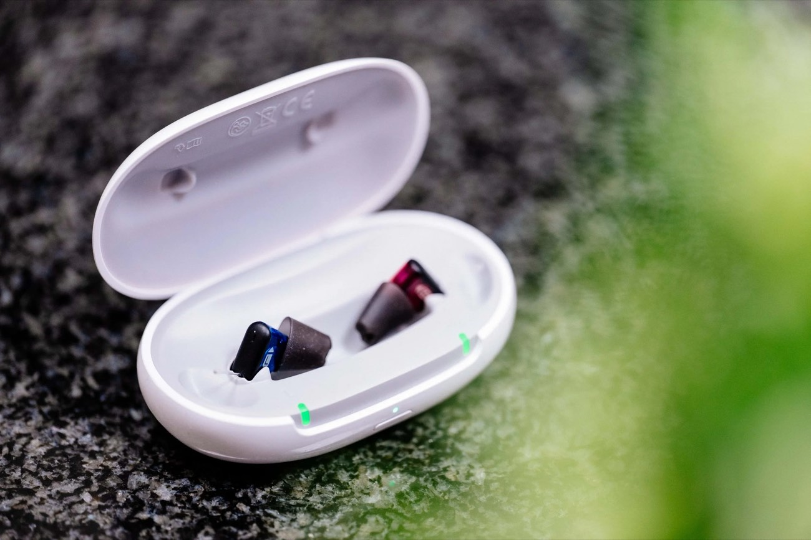

Hörgeräte in Mayen — Ihr bestes Sprachverstehen mit der Eifelohr-Target Anpassung
Ihr bestes Sprachverstehen — in jeder Situation.
Was unsere Kunden sagen
Echte Google-Bewertungen — durchweg 5,0 Sterne.
„Der Besitzer Johannes Penzel ist ein sehr gut ausgebildeter Hörakustik-Meister und überaus freundlich zu seinen Kunden. Die Ohrabdrücke, die er uns machte, sind perfekt und das Endprodukt hat eine perfekte Passgenauigkeit. Wir kommen wieder."
„Hier fühlte ich mich sehr gut aufgehoben. Herr Penzel und seine Mitarbeiter sind sehr freundlich und zuvorkommend. Ich wurde fachlich sehr gut und kompetent beraten. Es wurde viel ausprobiert und erklärt. Meine neuen Hörgeräte sind top."
„Wir sind mit der Beratung von Herrn Penzel voll umfassend zufrieden. Gerne empfehlen wir dieses Haus weiter."
Beim Eifelohr in Mayen erhalten Sie moderne Hörgeräte führender Hersteller — individuell angepasst mit unserer einzigartigen Eifelohr-Target.
Diese Anpassungstechnik stellt sicher, dass Ihr Hörgerät nicht nur technisch korrekt eingestellt ist, sondern perfekt zu Ihrer persönlichen Hörsituation, Ihrem Alltag und Ihrer Umgebung passt.
Das Ergebnis: ein natürlicheres Hörerlebnis von Anfang an.
3 Hörsysteme · 3 Kategorien
Die Eifelohr-Kollektion
Ein Anspruch: Ihr bestes Hörerlebnis. Entdecken Sie Hörsysteme, die zu Ihrem Leben passen — für mehr Verstehen, mehr Komfort und mehr unbeschwerte Momente. Welche Kategorie zu Ihnen passt, finden wir gemeinsam im kostenlosen Hörtest heraus.
ab
für 2 Hörgeräte
- Akku-Hörgeräte
- Ladestation inklusive
- IP68 zertifiziert
- Bluetooth-Verbindung
- App-Steuerung
- Neueste Hörgeräte-Technologie
- Eifelohr-Target Anpassung
- 2 Jahre Garantie
- Hörerfolg in 21 Tagen
- Eifelohr Full-Service-Paket
ab
für 2 Hörgeräte
- Akku-Hörgeräte
- Ladestation inklusive
- IP68 zertifiziert
- Bluetooth-Verbindung
- App-Steuerung
- Neueste Hörgeräte-Technologie
- Eifelohr-Target Anpassung
- 2 Jahre Garantie
- Hörerfolg in 21 Tagen
- Eifelohr Full-Service-Paket
+ Zusätzlich
- 14 Kanäle
- Leichteres Sprachverstehen in lauter Umgebung
- Tinnitus-Hilfe
- Klangreinigung
- Natürliches Hören
- Modellfarben auswählbar
ab
für 2 Hörgeräte
- Akku-Hörgeräte
- Ladestation inklusive
- IP68 zertifiziert
- Bluetooth-Verbindung
- App-Steuerung
- Neueste Hörgeräte-Technologie
- Eifelohr-Target Anpassung
- 2 Jahre Garantie
- Hörerfolg in 21 Tagen
- Eifelohr Full-Service-Paket
+ Zusätzlich
- 24 Kanäle
- Tinnitus-Hilfe
- Klangreinigung
- Natürliches Hören
- Modellfarben auswählbar
- Geringe Höranstrengung
- Bestes Verstehen in lauter Umgebung
- Hören im Auto
- 360-Grad-Hören
Genannte Preise gelten für 2 Hörgeräte, für gesetzlich Krankenversicherte mit HNO-ärztlicher Verordnung (Erst- oder Folgeversorgung), zzgl. gesetzlicher Zuzahlung von 10 € je Hörgerät. Für Privatzahler (ohne Kassenleistung) zzgl. Kassenanteil von 1.508 € — d. h. Gut 2.407 €, Besser 4.207 €, Premium 6.807 €. Den genauen Betrag besprechen wir persönlich. Mehr zur Kostenübernahme →
Herstellerunabhängig
Alle führenden Marken — Wartung auch für woanders gekaufte Geräte
Wir sind herstellerunabhängig und beraten Sie zu Hörgeräten aller führenden Marken — ganz ohne Konzern-Hausmarke. Und das Beste: Unabhängig davon, wo Sie Ihr Hörgerät gekauft haben, warten und reparieren wir es. Auch wenn Ihr Phonak, Signia oder Oticon von einem anderen Akustiker oder online stammt, sind Sie bei uns in Mayen herzlich willkommen.
Reparatur & Wartung
Reinigung, Funktionskontrolle und Reparatur für Geräte aller Hersteller — auch für Fremdgeräte, die Sie nicht bei uns gekauft haben.
Batterien & Zubehör
Hörgerätebatterien, Filter, Schirmchen, Trockenkapseln und Pflegemittel — passend für alle gängigen Marken, direkt vor Ort.
Feinanpassung
Sitzt Ihr Gerät nicht optimal oder klingt es nicht rund? Wir justieren nach — mit der Eifelohr-Target-Methode, auch bei bestehenden Hörgeräten.
Unser Alleinstellungsmerkmal
Was ist die Eifelohr-Target Anpassung?
Die meisten Hörgeräte werden auf Basis des Audiogramms allein eingestellt — also nach dem Ergebnis des Hörtests. Das ist der Industriestandard und funktioniert als Ausgangspunkt. Aber es reicht nicht.
Warum? Weil jeder Gehörgang anders ist. Schon kleine Unterschiede in Form, Länge und Resonanzverhalten des Gehörgangs verändern, wie Schall Ihr Trommelfell erreicht. Ein Hörgerät, das nach Durchschnittswerten eingestellt ist, klingt für viele Menschen zu hell, zu dumpf, zu laut in ruhigen Momenten — oder zu leise, wenn es darauf ankommt.
Das Problem: Hörgeräte nach Standard — nicht nach Ihrem Ohr
Bei Kettenakustikern mit Zeitdruck und standardisierten Abläufen bleibt oft keine Zeit für das, was wirklich den Unterschied macht: eine präzise Überprüfung direkt im Ohr. Das Ergebnis: Kunden tragen das Hörgerät schließlich nicht mehr, weil es sich „unnatürlich" anfühlt — oder weil sie in Gruppen immer noch schlecht verstehen.
Die Lösung: ein Klang, der zu genau Ihrem Ohr passt
Statt nach Durchschnittswerten stellen wir Ihr Hörgerät danach ein, wie der Schall tatsächlich bei Ihnen ankommt. Dafür messen wir mit einer hauchdünnen Sonde direkt in Ihrem Gehörgang, was das Hörgerät wirklich an Ihr Trommelfell liefert — diese Messung im Ohr nennt sich Real-Ear-Messung (In-situ-Audiometrie).
Aus dieser Messung entsteht Ihre persönliche Zielkurve: die genaue Verstärkung, die Ihr Gehör braucht, damit Sprache, Musik und Alltagsgeräusche natürlich und ausgewogen klingen. Das Ergebnis für Sie: deutlich besseres Sprachverstehen — gerade dort, wo es sonst schwerfällt, etwa in Gruppen, im Restaurant oder bei Familienfeiern.
Der Ablauf in 5 Schritten
Ausführlicher Hörtest
Tonschwellenaudiometrie und Sprachaudiometrie — wir messen nicht nur, was Sie hören, sondern wie gut Sie Sprache in Ruhe und in Lärm verstehen.
Messung direkt in Ihrem Ohr
Mit einer feinen Sondenmessung im Gehörgang (Real-Ear-Messung) erfassen wir, wie Klang bei Ihnen wirklich ankommt — der Schlüssel zu natürlichem Hören.
Einstellung genau auf Ihr Gehör
Wir passen Ihr Hörgerät exakt an Ihre persönliche Zielkurve (Eifelohr-Target) an — kein Durchschnitt, sondern Ihr Ohr.
Alltagserprobung: 21 Tage
Sie tragen das Hörgerät in Ihrem echten Alltag. Wir justieren gezielt nach — so oft wie nötig, bis es perfekt sitzt und klingt.
Langfristige Nachsorge
Ihr Gehör verändert sich. Wir passen Ihr Hörgerät regelmäßig nach — ein Service, den wir als inhabergeführter Betrieb persönlich leisten.
Das Ergebnis: Ein Hörgerät, das sich von Anfang an natürlich anfühlt. Kein Übersteuern in lauten Räumen, kein Dumpfheit im ruhigen Gespräch. Sie hören — ohne dass Sie ständig daran denken müssen, dass Sie ein Hörgerät tragen.
Ihr bestes Sprachverstehen
Mit Hörgeräten können Sie Gesprächen wieder entspannter folgen, auch in geräuschvoller Umgebung. Musik ist wieder in ihrer gesamten Klangbreite erlebbar.
Wenig zu verstehen ist anstrengend für Körper und Geist. Ein individuell angepasstes Hörgerät sorgt für ein besseres Allgemeinbefinden und unterstützt die räumliche Orientierung.
Mehr Freude
Mit einer passenden Hörlösung nehmen Sie am sozialen Leben wieder uneingeschränkt teil. Sorglos mit Freunden und Familie sprechen zu können, macht glücklich. Leichter beim TV-Schauen alles zu verstehen, macht die Zeit auch deutlich entspannter.

Mehr Erfolg
Wer mehr hört, versteht weniger falsch — im Alltag wie im Berufsleben. Das schafft Verhandlungssicherheit und sorgt für mehr Selbstvertrauen. Sich auf sein Gehör wieder verlassen zu können, mindert Stress und verhindert Fehler.
Moderne Hörgeräte vom Eifelohr reduzieren Störgeräusche auf ein Minimum und ermöglichen so auch wieder angenehmes Arbeiten in geräuschvoller Umgebung.
Welche Hörgeräte-Bauformen gibt es?
Bei den Hörgeräte-Bauformen unterscheidet man vorrangig zwischen Hinter-dem-Ohr-Hörgeräten (HdO) und In-dem-Ohr-Hörgeräten (IdO).

Hinter-dem-Ohr-Hörgeräte
Hinter der Ohrmuschel sitzt ein kleiner, unauffälliger Empfänger mit Mikrofonen und Batterie. Die Schallausgabe befindet sich direkt im Gehörgang.
Die Verbindung erfolgt entweder mit einem dünnen, transparenten Schlauch oder mit einem transparenten Kabel. Durch diese Bauweise verbinden HdO-Hörgeräte den größtmöglichen Funktionsumfang mit einer unauffälligen Optik.
HdO-Hörgeräte sind für nahezu jede Art von Schwerhörigkeit erhältlich — auch für hochgradige Hörprobleme. Je nach Preisklasse ist eine Verbindung über Bluetooth mit Smartphone oder TV möglich.

Im-Ohr-Hörgeräte
Die gesamte Technik verschwindet im Gehörgang — besonders unauffällig und unempfindlich gegen Berührungen durch Kleidung oder Kopfbedeckungen.
IdO-Hörgeräte können kaum verrutschen oder unbeabsichtigt aus dem Ohr fallen, sodass sie gut beim Sport und in der Freizeit getragen werden können. Sie gibt es als individuelle Maßanfertigung mit Batterie oder Akku in unterschiedlichen Größen.
Eine Alternative sind Instant-Im-Ohr-Hörgeräte: ebenfalls sehr klein, jedoch von der Bauform immer gleich groß. Bluetooth-Verbindungen sind im IdO-Bereich meist nur bei größeren oder teureren Modellen möglich.
Transparent — was kostet mich ein Hörgerät?
Von der Nulltarif-Versorgung bis zum Premium-Hörsystem — die genauen Preise besprechen wir derzeit persönlich mit Ihnen.
- Volldigitales Markenhörgerät
- Eifelohr-Target Anpassung
- Automatische Umgebungserkennung
- Geräuschunterdrückung
- Service & Nachsorge inklusive
Gegen Vorlage einer ärztlichen Verordnung. Details im persönlichen Gespräch.
- Automatisches Sprachverstehen
- Bluetooth-Streaming
- Geräuschunterdrückung
- Eifelohr-Target Anpassung
- Service & Nachsorge inklusive
Aufzahlung zzgl. zur Kassenleistung. Konkrete Beratung im persönlichen Gespräch.
- Automatisches Sprachverstehen
- Bluetooth-Streaming
- Akku-Technologie
- Geräuschunterdrückung
- Eifelohr-Target Anpassung
- Service & Nachsorge inklusive
Aufzahlung zzgl. zur Kassenleistung. Konkrete Beratung im persönlichen Gespräch.
- Automatisches Sprachverstehen
- Bluetooth-Streaming
- Akku-Technologie
- KI-gestützte Lärmdämpfung
- Eifelohr-Target Anpassung
- Service & Nachsorge inklusive
Aufzahlung zzgl. zur Kassenleistung. Konkrete Beratung im persönlichen Gespräch.
- KI-gestützte Lärmdämpfung
- Bestes Sprachverstehen in Lärm
- Bluetooth-Streaming
- Akku-Technologie
- KI-Unterstützung in lauten Umgebungen
- Eifelohr-Target Anpassung
Aufzahlung zzgl. zur Kassenleistung. Konkrete Beratung im persönlichen Gespräch.
Der genaue Eigenanteil hängt von Ihrer Krankenkasse und dem gewählten Modell ab — wir beraten Sie gern persönlich. Mehr zur Kostenübernahme →